This page uses the picture making layout to present every SHS physics topic and every subtopic with clear text and diagrams.
Use the sidebar to jump to any topic and review the full course structure.Senior High School physics is the study of matter, energy, motion, and the laws that govern the natural world. It combines observation, experimentation, and mathematical reasoning to explain how objects move and interact.
In SHS physics, students learn to describe physical situations precisely, to calculate physical quantities, and to use models that simplify real-world systems without losing essential behavior.
The SHS curriculum covers five broad topics: mechanics, gravitation, thermodynamics, electromagnetism, and atomic/nuclear physics. Each topic has multiple subtopics that prepare students for further study in science and engineering.
This course guide is designed to explain every major subtopic in detail.
Physics strengthens analytical skills and helps students learn how to solve problems in a systematic way. It trains students to break complex situations into simpler parts and to reason from basic principles.
In SHS, physics is essential for students who want to pursue careers in engineering, medicine, technology, research, and the natural sciences. It provides the foundation for understanding electricity, mechanics, heat, and atomic structure.
Physics also allows students to understand everyday phenomena, from why the sky is blue to how motors work, from why bridges are strong to how energy is conserved in collisions.
Studying physics cultivates careful observation, accurate measurement, and the ability to communicate technical ideas clearly. These skills are powerful in both academic and professional contexts.
Mechanics is the first major SHS physics topic. It explains how objects move and how forces influence that motion. It also introduces energy and equilibrium, which are used across all areas of physics.
Mechanics is divided into four subtopics: kinematics, dynamics, statics and energy, and Newton's laws with conservation principles. Each subtopic builds directly on the previous one.
illustration of Robert Hooke's law of elasticity of materials
illustration of Robert Hooke's law of elasticity of materialsIllustration of Hooke's law of elasticity of materials, showing the stretching of a spring in proportion to the applied force, from Robert Hooke's Lectures de Potentia Restitutiva (1678).
Mechanics is generally taken to mean the study of the motion of objects (or their lack of motion) under the action of given forces. Classical mechanics is sometimes considered a branch of applied mathematics. It consists of kinematics, the description of motion, and dynamics, the study of the action of forces in producing either motion or static equilibrium (the latter constituting the science of statics). The 20th-century subjects of quantum mechanics, crucial to treating the structure of matter, subatomic particles, superfluidity, superconductivity, neutron stars, and other major phenomena, and relativistic mechanics, important when speeds approach that of light, are forms of mechanics that will be discussed later in this section.
.jpeg)
In classical mechanics the laws are initially formulated for point particles in which the dimensions, shapes, and other intrinsic properties of bodies are ignored. Thus in the first approximation even objects as large as Earth and the Sun are treated as pointlike—e.g., in calculating planetary orbital motion. In rigid-body dynamics, the extension of bodies and their mass distributions are considered as well, but they are imagined to be incapable of deformation. The mechanics of deformable solids is elasticity; hydrostatics and hydrodynamics treat, respectively, fluids at rest and in motion.
The three laws of motion set forth by Isaac Newton form the foundation of classical mechanics, together with the recognition that forces are directed quantities (vectors) and combine accordingly. The first law, also called the law of inertia, states that, unless acted upon by an external force, an object at rest remains at rest, or if in motion, it continues to move in a straight line with constant speed. Uniform motion therefore does not require a cause. Accordingly, mechanics concentrates not on motion as such but on the change in the state of motion of an object that results from the net force acting upon it. Newton’s second law equates the net force on an object to the rate of change of its momentum, the latter being the product of the mass of a body and its velocity. Newton’s third law, that of action and reaction, states that when two particles interact, the forces each exerts on the other are equal in magnitude and opposite in direction. Taken together, these mechanical laws in principle permit the determination of the future motions of a set of particles, providing their state of motion is known at some instant, as well as the forces that act between them and upon them from the outside. From this deterministic character of the laws of classical mechanics, profound (and probably incorrect) philosophical conclusions have been drawn in the past and even applied to human history.
.PNG)
Lying at the most basic level of physics, the laws of mechanics are characterized by certain symmetry properties, as exemplified in the aforementioned symmetry between action and reaction forces. Other symmetries, such as the invariance (i.e., unchanging form) of the laws under reflections and rotations carried out in space, reversal of time, or transformation to a different part of space or to a different epoch of time, are present both in classical mechanics and in relativistic mechanics, and with certain restrictions, also in quantum mechanics. The symmetry properties of the theory can be shown to have as mathematical consequences basic principles known as conservation laws, which assert the constancy in time of the values of certain physical quantities under prescribed conditions. The conserved quantities are the most important ones in physics; included among them are mass and energy (in relativity theory, mass and energy are equivalent and are conserved together), momentum, angular momentum, and electric charge.
Kinematics
Kinematics is the study of motion without considering its causes. In SHS, students learn to describe the position of objects, their velocities, and their accelerations using both equations and graphs.
The main quantities are displacement, distance, speed, velocity, and acceleration. Displacement is a vector quantity that includes direction, while distance is scalar and always positive.
Students study motion in one dimension, such as a car moving in a straight line, and motion in two dimensions, such as a ball thrown in the air. They learn to use the suvat equations for constant acceleration.
Distance-time graphs help students understand how speed changes. A straight line means constant speed; a curved line means acceleration. Velocity-time graphs show acceleration as the slope and displacement as the area under the curve.
Key SHS formulas for uniformly accelerated motion are:
Projectile motion is also studied under kinematics. The horizontal and vertical motions act independently, allowing students to calculate range, maximum height, and total time of flight.
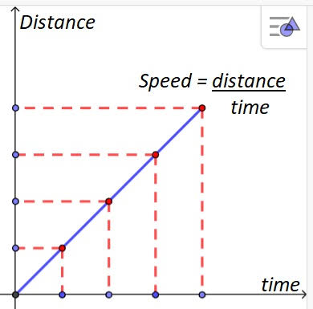
Kinematics is essential in SHS because it gives students the language of motion and the tools to solve problems involving moving objects in everyday and scientific contexts.
Dynamics
Dynamics explains the causes of motion. It introduces force, mass, and acceleration, and it describes how forces change the state of motion of objects.
The key relationship is Newton’s second law, F = ma. This formula shows that the net force acting on an object is equal to its mass multiplied by its acceleration.
SHS students learn to draw free-body diagrams that show all the forces acting on an object. These diagrams help to identify the correct forces and to resolve them into components.
Common forces include weight, normal reaction, friction, tension, and applied forces. Friction is a resistive force that acts parallel to surfaces in contact.
Static friction prevents motion up to a maximum value, while kinetic friction opposes motion once sliding has started. The coefficient of friction is a numerical value that measures how rough the surfaces are.
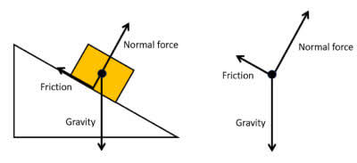
Dynamics also includes circular motion, where a centripetal force acts toward the centre of the circle. The formula F = mv²/r is used in problems about spinning objects and satellites.
Understanding dynamics is central to predicting how objects respond to forces, whether they are cars accelerating, rockets launching, or athletes changing direction.
Statics and Energy
Statics deals with objects that are at rest or move without acceleration. In SHS physics, it is used to analyze structures, supports, and systems in equilibrium.
The two conditions for equilibrium are that the sum of forces is zero and the sum of moments (torques) is zero. Students use these conditions to solve beam problems and to find support reactions.
The moment of a force depends on the magnitude of the force and its perpendicular distance from the pivot. This explains why doors open more easily when pushed near the handle instead of near the hinge.
Energy in mechanics appears as kinetic energy and potential energy. Kinetic energy is the energy of motion, while potential energy is stored energy associated with position or configuration.
The work-energy theorem states that the total work done by forces equals the change in the kinetic energy of a body. The formula is W = ΔKE.
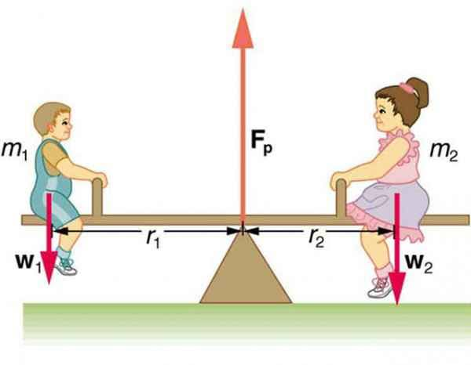
Statics and energy are especially important for engineering design, because they allow students to calculate how loads are carried and how much energy is stored and released.
Newton's Laws and Conservation
Newton’s laws are the core principles of classical mechanics. They describe inertia, the relation between force and acceleration, and action-reaction pairs.
The first law, also called the law of inertia, says that a body will not change its motion unless a net force acts upon it. This explains why a car coasts when the engine is off and why an object in space keeps moving.
The second law gives a quantitative measure of force: F = ma. It allows students to calculate acceleration from known forces or to determine the force required to change motion.
The third law states that for every action, there is an equal and opposite reaction. This principle is used in analysing collisions, rocket thrust, and the motion of paired objects.
Conservation laws follow from Newton’s laws. The conservation of momentum says that in an isolated system, the total momentum remains constant. This is used in collision and explosion problems.
Conservation of energy states that energy cannot be created or destroyed, only transformed from one form to another. Mechanical energy is conserved in systems without friction.
Gravitation is the study of the force that pulls masses toward each other. In SHS physics, it explains free fall on Earth, the motion of planets, satellite orbits, tides, and the first modern ideas about the structure of space.
This topic is divided into universal gravitation, orbits and tides, and a conceptual introduction to relativity. Each subtopic helps students see how gravity acts both locally and across the solar system.
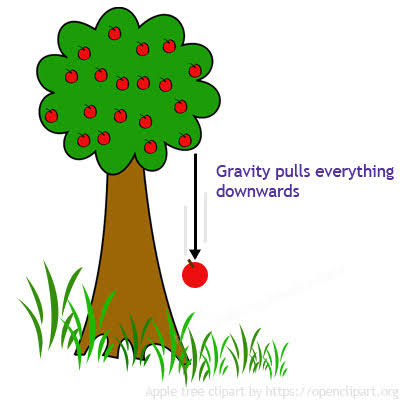
Universal Gravitation
Newton’s universal law of gravitation states that every two masses attract each other with a force equal to Gm₁m₂/r². The constant G is the gravitational constant.
In SHS physics, students use this law to calculate the weight of objects, the force between planets or stars, and the gravitational field strength at various distances.
The gravitational field strength near Earth’s surface is about 9.8 N/kg. The law also explains why the force becomes much weaker as the distance between masses increases.
Students learn that mass is a measure of the amount of matter, while weight is the gravitational force acting on that mass. On different planets, mass stays the same, but weight changes.
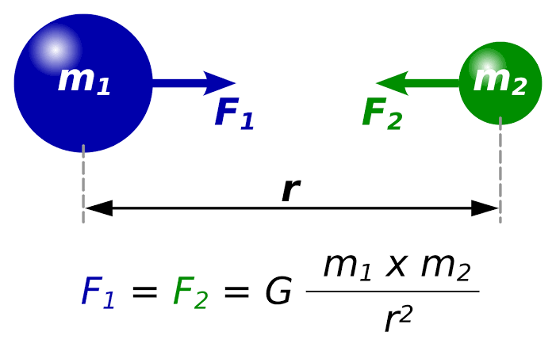
Orbits and Tides
Orbital motion is a balance between inertia and gravity. An object moving sideways fast enough will keep falling around Earth instead of striking the ground.
The circular orbit speed is v = √(GM / r). Students calculate how speed and period change with the altitude of a satellite.
Tides are caused by the Moon’s gravitational pull. The difference in gravitational force between the near side and far side of Earth creates two bulges of water, producing two high tides and two low tides each day.
SHS physics also explains spring tides, which are especially high, when the Sun, Moon, and Earth align, and neap tides, which are less extreme, when the Sun and Moon are at right angles.
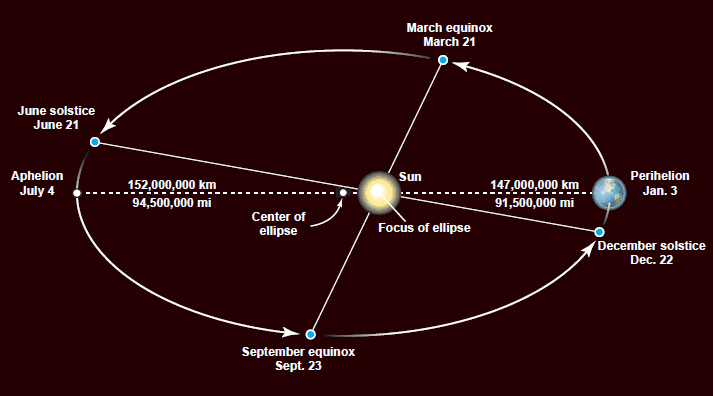
Relativity
Relativity is introduced in SHS as the idea that gravity is caused by the curvature of space and time. Mass tells space-time how to curve, and curved space-time tells objects how to move.
This concept helps explain phenomena that cannot be fully described by Newton’s laws, such as the bending of light near a massive object and the advance of Mercury’s perihelion.
In SHS, relativity is treated gently as a modern extension of gravitation, reminding students that scientific laws evolve when better evidence is available.
Although detailed relativity calculations are beyond the SHS syllabus, understanding the basic principle strengthens students’ grasp of how science progresses.
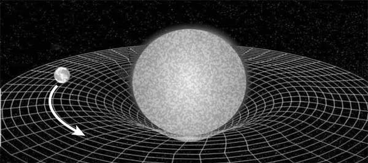
This SHS topic explains energy transfer by heat and the laws that govern thermal systems. It includes heat and temperature, the first and second laws of thermodynamics, and statistical mechanics.
The concepts in this section are essential for understanding engines, refrigerators, weather, and the behaviour of gases and materials.
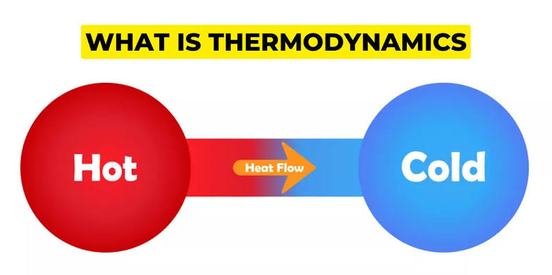
Heat and Temperature
Heat is energy that moves from one object to another due to temperature difference. Temperature measures the average kinetic energy of particles in a material.
In SHS physics students learn the difference between heat and temperature and how to convert between Celsius, Kelvin, and Fahrenheit scales.
Heat transfer occurs by conduction, convection, and radiation. These three mechanisms explain how heat moves in metals, fluids, and through empty space.
The behaviour of gases under heating is described by the kinetic theory, which connects particle motion to pressure and temperature.
Understanding these ideas is essential for interpreting the behaviour of engines, climate systems, and everyday phenomena such as boiling water and refrigeration.

First Law of Thermodynamics
The first law of thermodynamics is the law of energy conservation applied to thermal systems. It states that the change in internal energy equals the heat added minus the work done by the system.
ΔU = Q - W
students apply this law to gas expansion, compression, and heating. When a gas does work by pushing a piston, its internal energy changes accordingly.
The first law also helps students distinguish between heat and work, showing that both are ways to transfer energy across the boundary of a system.
This law is the foundation for understanding engines, refrigerators, and the thermal behaviour of materials. It ensures that energy account sheets always balance.
Second Law and Entropy
The second law of thermodynamics introduces entropy, a measure of disorder, and states that entropy of an isolated system cannot decrease.
students use the second law to explain why heat flows from hot objects to cold ones and why perpetual-motion machines are impossible.
Heat engines convert heat into work but always waste some energy. The second law sets the maximum efficiency of these engines and explains why no engine can be 100% efficient.
Refrigerators and heat pumps also rely on the second law. They move heat from cold regions to hot regions by doing work, which is why they require electrical energy.
Entropy increases as energy becomes more spread out and less available to do work. This principle helps explain the arrow of time and why processes are irreversible.
Third Law
The third law of thermodynamics states that the entropy at the absolute zero of temperature is zero, corresponding to the most ordered possible state.

Statistical Mechanics
Statistical mechanics connects the microscopic behaviour of atoms and molecules with macroscopic thermal properties like temperature and pressure.
It uses probability to describe large numbers of particles, because tracking each particle individually is impossible. Instead, SHS students learn to use averages and distributions.
A microstate is one specific arrangement of particles, while a macrostate is the overall state defined by temperature, pressure, and volume.
Systems with more accessible microstates have higher entropy. This idea explains why heat spontaneously spreads out and why cold and hot objects mix.
Brownian particle
Brownian particle(Left) Random motion of a Brownian particle and (right) random discrepancy between the molecular pressures on different surfaces of the particle that cause motion.
The science of statistical mechanics derives bulk properties of systems from the mechanical properties of their molecular constituents, assuming molecular chaos and applying the laws of probability. Regarding each possible configuration of the particles as equally likely, the chaotic state (the state of maximum entropy) is so enormously more likely than ordered states that an isolated system will evolve to it, as stated in the second law of thermodynamics. Such reasoning, placed in mathematically precise form, is typical of statistical mechanics, which is capable of deriving the laws of thermodynamics but goes beyond them in describing fluctuations (i.e., temporary departures) from the thermodynamic laws that describe only average behaviour. An example of a fluctuation phenomenon is the random motion of small particles suspended in a fluid, known as Brownian motion.
Quantum statistical mechanics plays a major role in many other modern fields of science, as, for example, in plasma physics (the study of fully ionized gases), in solid-state physics, and in the study of stellar structure. From a microscopic point of view the laws of thermodynamics imply that, whereas the total quantity of energy of any isolated system is constant, what might be called the quality of this energy is degraded as the system moves inexorably, through the operation of the laws of chance, to states of increasing disorder until it finally reaches the state of maximum disorder (maximum entropy), in which all parts of the system are at the same temperature, and none of the state’s energy may be usefully employed. When applied to the universe as a whole, considered as an isolated system, this ultimate chaotic condition has been called the “heat death.”

Electricity and magnetism are two closely related branches of physics. In SHS, they are taught together because changing electric fields create magnetic fields and changing magnetic fields create electric fields.
This topic covers electric forces, electric fields, circuits, magnetic effects of currents, electromagnetic induction, waves, and optics.
Although conceived of as distinct phenomena until the 19th century, electricity and magnetism are now known to be components of the unified field of electromagnetism. Particles with electric charge interact by an electric force, while charged particles in motion produce and respond to magnetic forces as well. Many subatomic particles, including the electrically charged electron and proton and the electrically neutral neutron, behave like elementary magnets. On the other hand, in spite of systematic searches undertaken, no magnetic monopoles, which would be the magnetic analogues of electric charges, have ever been found.
The field concept plays a central role in the classical formulation of electromagnetism, as well as in many other areas of classical and contemporary physics. Einstein’s gravitational field, for example, replaces Newton’s concept of gravitational action at a distance. The field describing the electric force between a pair of charged particles works in the following manner: each particle creates an electric field in the space surrounding it, and so also at the position occupied by the other particle; each particle responds to the force exerted upon it by the electric field at its own position.
.jpg)
Electric Fields and Circuits
Electric forces arise between charged particles. Coulomb’s law describes the magnitude of the force between two point charges.
students learn that the electric field E at a point is the force experienced by a positive test charge divided by the magnitude of that charge.
Electric circuits are constructed from sources of potential difference (cells), conductors, and resistors. Ohm’s law, V = IR, describes the voltage-current relationship for many materials.
Series circuits have the same current through each component, while parallel circuits have the same voltage across each branch. Students calculate equivalent resistance and power dissipated in circuits.
The power delivered to a resistor is P = VI = I²R = V²/R. SHS problems often ask students to compare the energy used by different devices over time.
Magnetism
Magnetism arises from moving electric charges and from materials containing aligned atomic magnets. Magnets have north and south poles and create magnetic fields around them.
A current-carrying wire produces a circular magnetic field around it. The direction of the field is given by the right-hand rule.
When a wire carrying current sits inside a magnetic field, it experiences a force given by F = BIL, where B is the magnetic flux density, I is current, and L is the length of wire in the field.
Solenoids and electromagnets concentrate magnetic fields and are used in devices such as relays, motors, and speakers.
Electromagnetic induction occurs when a changing magnetic flux through a coil induces an emf. This principle is the basis of generators and transformers.
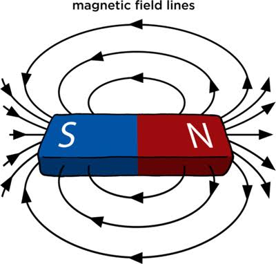
Electromagnetic Waves
Electromagnetic waves are oscillating electric and magnetic fields that travel through space with the speed of light, c = 3.0 × 10⁸ m/s.
The electromagnetic spectrum includes radio waves, microwaves, infrared, visible light, ultraviolet, X-rays, and gamma rays. Each type has different wavelength and energy.
students use the relation c = fλ to connect frequency, wavelength, and the speed of light. They also learn how waves carry energy and information.
Electromagnetic waves are used in communication, medical imaging, and remote sensing technologies. Visible light is only a small part of the full spectrum.
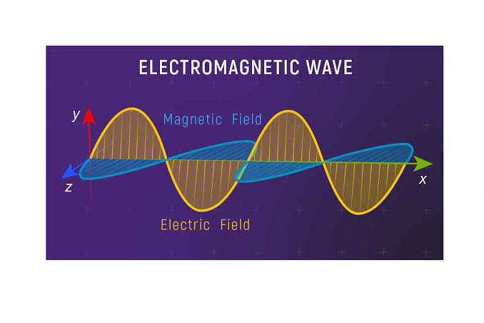
Optics
Optics is the study of light and how it behaves when it reflects from mirrors, refracts through lenses, and forms images.
Geometrical optics uses rays to describe reflection and refraction. Students apply the law of reflection and Snell’s law to calculate angles and image positions.
Physical optics studies wave phenomena such as interference and diffraction. These effects reveal the wave nature of light and explain patterns formed by gratings and slits.
Optics also includes the human eye and optical instruments. Understanding lenses and mirrors is important for designing microscopes, cameras, and telescopes.
Diffraction grating
Diffraction gratingSpectrum of white light by a diffraction grating. With a prism, the red end of the spectrum is more compressed than the violet end.
Because light consists of electromagnetic waves, the propagation of light can be regarded as merely a branch of electromagnetism. However, it is usually dealt with as a separate subject called optics: the part that deals with the tracing of light rays is known as geometrical optics, while the part that treats the distinctive wave phenomena of light is called physical optics. More recently, there has developed a new and vital branch, quantum optics, which is concerned with the theory and application of the laser, a device that produces an intense coherent beam of unidirectional radiation useful for many applications.
The formation of images by lenses, microscopes, telescopes, and other optical devices is described by ray optics, which assumes that the passage of light can be represented by straight lines, that is, rays. The subtler effects attributable to the wave property of visible light, however, require the explanations of physical optics. One basic wave effect is interference, whereby two waves present in a region of space combine at certain points to yield an enhanced resultant effect (e.g., the crests of the component waves adding together); at the other extreme, the two waves can annul each other, the crests of one wave filling in the troughs of the other. Another wave effect is diffraction, which causes light to spread into regions of the geometric shadow and causes the image produced by any optical device to be fuzzy to a degree dependent on the wavelength of the light. Optical instruments such as the interferometer and the diffraction grating can be used for measuring the wavelength of light precisely (about 500 micrometres) and for measuring distances to a small fraction of that length.
.png)
Atomic and nuclear physics explore matter at the smallest scale. In SHS, students learn about the structure of atoms, the behaviour of electrons, the properties of materials, and the energy released by nuclei.
This topic includes atomic structure and spectroscopy, condensed matter, and nuclear physics. It connects microscopic particles with the visible and technological world.
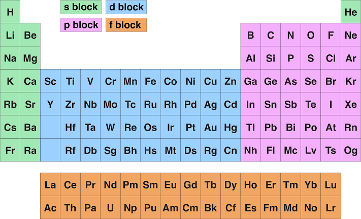
Atomic Structure and Spectroscopy
Atoms are composed of a nucleus containing protons and neutrons, surrounded by electrons. In SHS physics this is represented by the Bohr model and energy level diagrams.
Electrons occupy discrete energy levels. When an electron moves between levels, it either absorbs or emits a photon whose energy equals the level difference.
Spectroscopy studies these photons. Each element has a unique pattern of spectral lines, which can be used to identify elements in gases, flames, and stars.
Students practice writing electron configurations and using energy level diagrams to explain emission and absorption spectra.
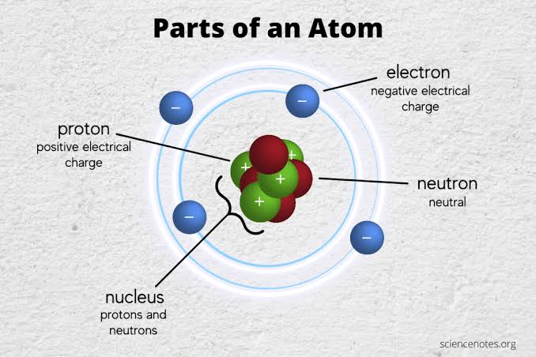
Condensed Matter
Condensed matter physics studies solids and liquids. In SHS this is introduced through the behaviour of electrons in different materials and the difference between conductors, insulators, and semiconductors.
In conductors, electrons can move freely and carry current. In insulators, electrons are tightly bound to atoms and cannot flow easily.
Semiconductors lie between conductors and insulators. Their conductivity can be controlled by adding impurities, a process called doping.
The energy band model explains these behaviours. Conductors have overlapping bands, insulators have a large energy gap, and semiconductors have a smaller gap.
This knowledge is essential for understanding electronic devices such as diodes, transistors, and solar cells.
Nuclear Physics
Nuclear physics studies the atomic nucleus and the radiation it emits. students learn about alpha, beta, and gamma radiation and the properties of each type.
Alpha radiation consists of helium nuclei and has low penetration power. Beta radiation is fast electrons or positrons and penetrates further. Gamma radiation is high-energy electromagnetic radiation with the highest penetration.
The concept of half-life describes how the activity of a radioactive sample decreases over time. students calculate remaining activity after several half-lives.
Nuclear reactions include fission, in which a large nucleus splits into smaller fragments, and fusion, in which light nuclei combine to form a heavier nucleus. Both processes release large amounts of energy.
Nuclear physics links to applications such as nuclear power, medical imaging, and the energy production in stars.
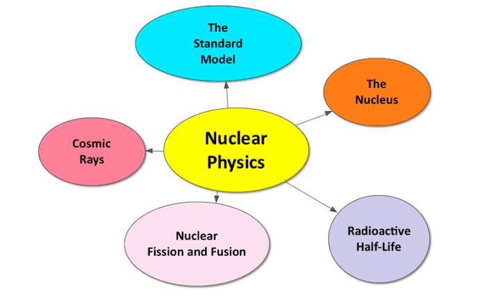
This SHS physics course guide covers all five major topics and their subtopics with detailed explanations and diagrams. It is designed to help students learn the full structure of the curriculum.
Mechanics, gravitation, thermodynamics, electromagnetism, and atomic physics together form a coherent picture of how the physical world behaves from particles to planets.
Mastering these subtopics prepares SHS students for advanced study in science, engineering, technology, and mathematics.